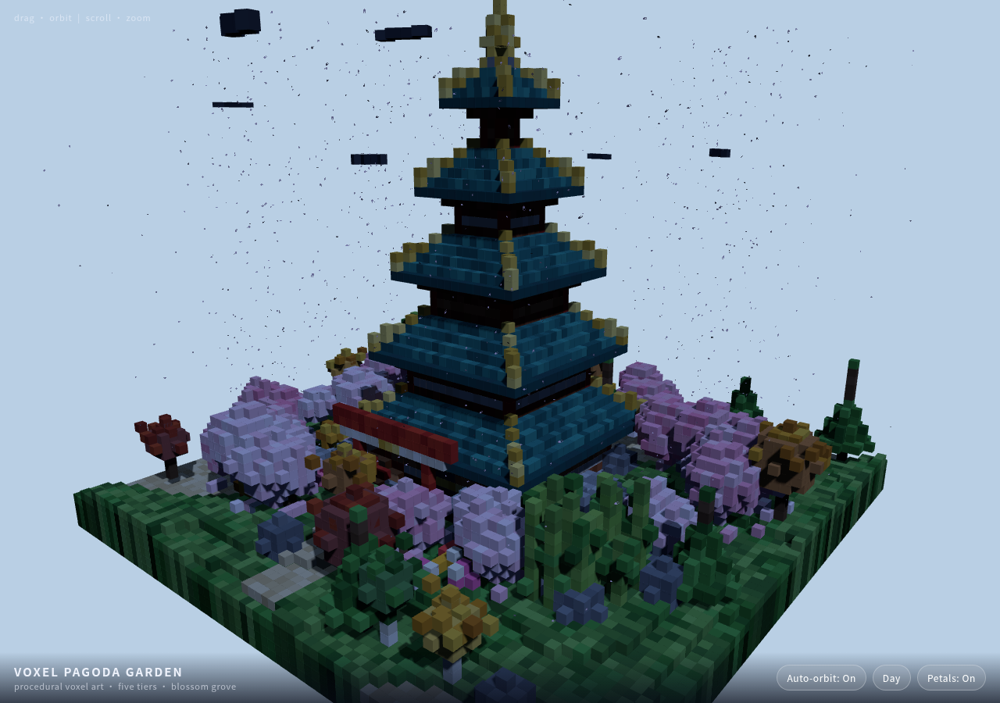
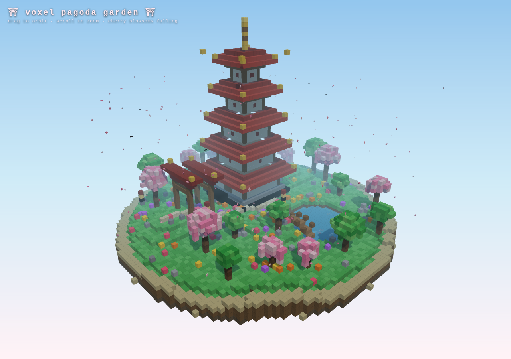
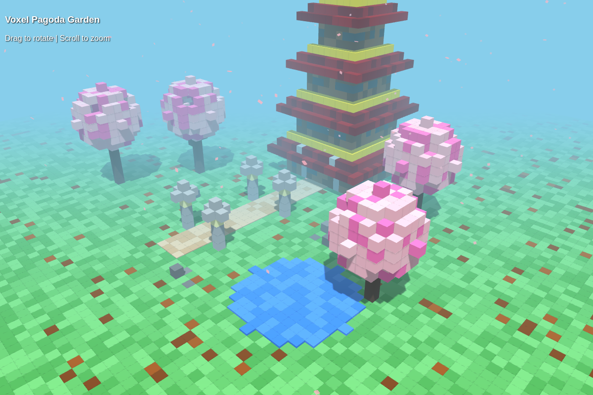
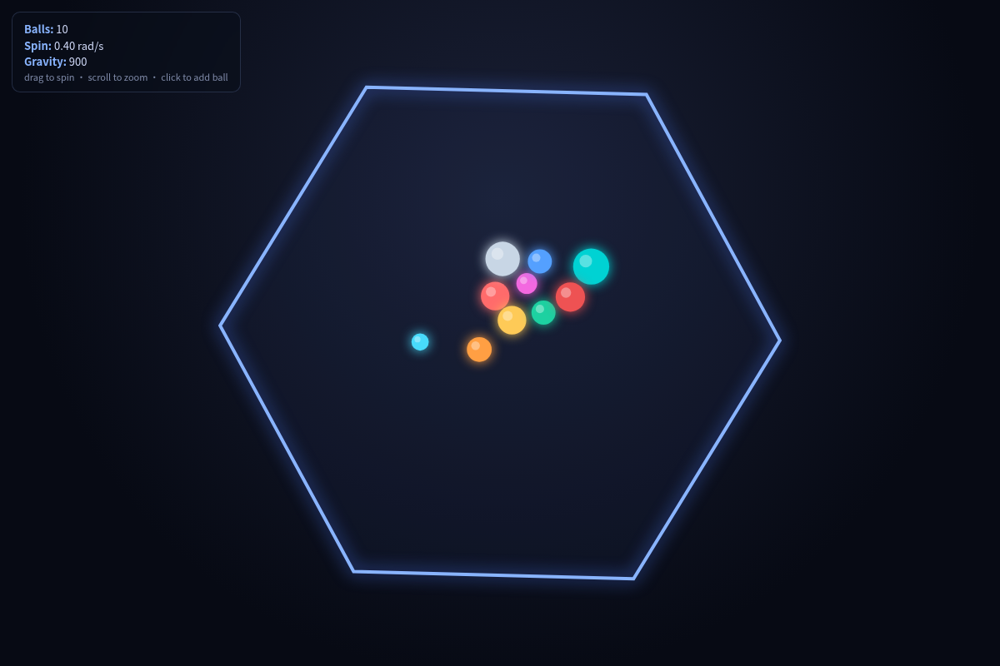
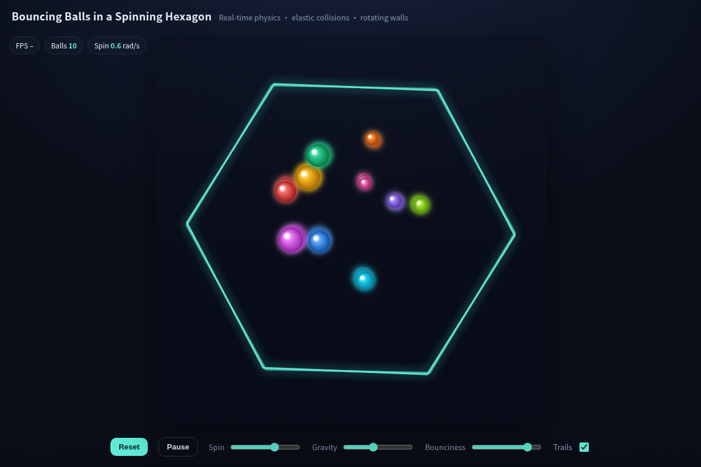

Halogen vs Kyojin, same model, one machine
AZW GTR Pro (Beelink GTR9 Pro), Ryzen AI Max+ 395, 128 GB unified, gfx1151 · measured one engine at a time · 2026-10-21
Halogen 2e98dc53ed4a ·
Kyojin a0c48fea49a6 ·
111 measured, 3 not run, 0 aborted
Pagoda follow-up: 2026-10-22 — bare and Pi SDK results
The table scrolls sideways when the screen is too narrow for both engines; the measurement column stays put.
| Measurement | Condition | Halogen | Kyojin |
|---|---|---|---|
| Prefill (tok/s) | bench.py method | 1,601 rawhalogen · 2e98dc53ed4a | 1,251 rawkyojin-s1 · a0c48fea49a6 |
| Prefill (tok/s) | prompt ~32K | 1,851 rawhalogen · 2e98dc53ed4a | 1,350 rawkyojin-s1 · a0c48fea49a6 |
| Prefill (tok/s) | prompt ~128K | 1,796 rawhalogen · 2e98dc53ed4a | 1,309 rawkyojin-s1 · a0c48fea49a6 |
| Prefill (tok/s) | prompt ~262K | 1,707 rawhalogen · 2e98dc53ed4a | 1,259 rawkyojin-s1 · a0c48fea49a6 |
| Prompt tokens (tokens) | bench.py method | 2,737 rawhalogen · 2e98dc53ed4a | 3,110 rawkyojin-s1 · a0c48fea49a6 |
| Prompt tokens (tokens) | prompt ~32K | 30,790 rawhalogen · 2e98dc53ed4a | 31,209 rawkyojin-s1 · a0c48fea49a6 |
| Prompt tokens (tokens) | prompt ~128K | 122,456 rawhalogen · 2e98dc53ed4a | 124,817 rawkyojin-s1 · a0c48fea49a6 |
| Prompt tokens (tokens) | prompt ~262K | 250,549 rawhalogen · 2e98dc53ed4a | 255,600 rawkyojin-s1 · a0c48fea49a6 |
| Decode (tok/s) | decode chat | 53.6 rawhalogen · 2e98dc53ed4a | 50.9 rawkyojin-s1 · a0c48fea49a6 |
| Decode (tok/s) | decode code | 60.8 rawhalogen · 2e98dc53ed4a | 56.8 rawkyojin-s1 · a0c48fea49a6 |
| Decode (tok/s) | decode prose | 49.5 rawhalogen · 2e98dc53ed4a | 53.4 rawkyojin-s1 · a0c48fea49a6 |
| Time to first token (s) | prompt ~32K | 16.7 rawhalogen · 2e98dc53ed4a | 23.3 rawkyojin-s1 · a0c48fea49a6 |
| Time to first token (s) | prompt ~128K | 68.5 rawhalogen · 2e98dc53ed4a | 95.8 rawkyojin-s1 · a0c48fea49a6 |
| Time to first token (s) | prompt ~262K | 148 rawhalogen · 2e98dc53ed4a | 204 rawkyojin-s1 · a0c48fea49a6 |
| Fact retrieved at depth | fact at 40% of 250K | yes rawhalogen · 2e98dc53ed4a | yes rawkyojin-s1 · a0c48fea49a6 |
| Fact retrieved at depth | fact at 85% of 250K | yes rawhalogen · 2e98dc53ed4a | yes rawkyojin-s1 · a0c48fea49a6 |
| Tool call emitted | single tool call | yes rawhalogen · 2e98dc53ed4a | yes rawkyojin-s1 · a0c48fea49a6 |
| Tool call carries arguments | single tool call | yes rawhalogen · 2e98dc53ed4a | yes rawkyojin-s1 · a0c48fea49a6 |
| Image input understood | generated PNG | yes rawhalogen · 2e98dc53ed4a | yes rawkyojin-s1 · a0c48fea49a6 |
| Thinking tokens at xhigh (tokens) | effort xhigh | 60 rawhalogen · 2e98dc53ed4a | 170 rawkyojin-s1 · a0c48fea49a6 |
| Output throughput, all requests (tok/s) | N=1 | 35.1 rawhalogen · 2e98dc53ed4a | 28.4 rawkyojin-s4 · a0c48fea49a6 |
| Output throughput, all requests (tok/s) | N=2 | 38.2 rawhalogen-extra · 2e98dc53ed4a | 31.0 rawkyojin-extra · a0c48fea49a6 |
| Output throughput, all requests (tok/s) | N=4 | 42.4 rawhalogen · 2e98dc53ed4a | 31.6 rawkyojin-s4 · a0c48fea49a6 |
| Decode per request (median) (tok/s) | N=1 | 60.8 rawhalogen · 2e98dc53ed4a | 53.4 rawkyojin-s4 · a0c48fea49a6 |
| Decode per request (median) (tok/s) | N=2 | 31.2 rawhalogen-extra · 2e98dc53ed4a | 31.4 rawkyojin-extra · a0c48fea49a6 |
| Decode per request (median) (tok/s) | N=4 | 16.6 rawhalogen · 2e98dc53ed4a | 16.3 rawkyojin-s4 · a0c48fea49a6 |
| First token, median across requests (s) | N=1 | 4.27 rawhalogen · 2e98dc53ed4a | 5.76 rawkyojin-s4 · a0c48fea49a6 |
| First token, median across requests (s) | N=2 | 6.82 rawhalogen-extra · 2e98dc53ed4a | 11.5 rawkyojin-extra · a0c48fea49a6 |
| First token, median across requests (s) | N=4 | 11.6 rawhalogen · 2e98dc53ed4a | 23.0 rawkyojin-s4 · a0c48fea49a6 |
| First token, 95th percentile (s) | N=1 | 4.27 rawhalogen · 2e98dc53ed4a | 5.76 rawkyojin-s4 · a0c48fea49a6 |
| First token, 95th percentile (s) | N=2 | 9.24 rawhalogen-extra · 2e98dc53ed4a | 11.5 rawkyojin-extra · a0c48fea49a6 |
| First token, 95th percentile (s) | N=4 | 19.1 rawhalogen · 2e98dc53ed4a | 23.0 rawkyojin-s4 · a0c48fea49a6 |
| Requests actually in flight (requests) | N=1 | 1 rawhalogen · 2e98dc53ed4a | not run rawkyojin-s4 · a0c48fea49a6 |
| Requests actually in flight (requests) | N=2 | 2 rawhalogen-extra · 2e98dc53ed4a | not run rawkyojin-extra · a0c48fea49a6 |
| Requests actually in flight (requests) | N=4 | 4 rawhalogen · 2e98dc53ed4a | not run rawkyojin-s4 · a0c48fea49a6 |
| Prompt tokens served from cache (tokens) | same prefix again | 95,680 rawhalogen-extra · 2e98dc53ed4a | 94,208 rawkyojin-extra · a0c48fea49a6 |
| First token, repeated prefix (s) | same prefix again | 0.58 rawhalogen-extra · 2e98dc53ed4a | 2.96 rawkyojin-extra · a0c48fea49a6 |
| First token, cold prefix (s) | cold control | 53.5 rawhalogen-extra · 2e98dc53ed4a | 74.9 rawkyojin-extra · a0c48fea49a6 |
| Time to a usable server (s) | first start | 37 rawhalogen · 2e98dc53ed4a | 561 rawkyojin-s1 · a0c48fea49a6 |
| Time to a usable server (s) | warm start | 16 rawhalogen · 2e98dc53ed4a | 43 rawkyojin-s4 · a0c48fea49a6 |
| Pagoda output tokens (tokens) | pagoda one-shot | 4,785 rawhalogen · 2e98dc53ed4a | 5,216 rawkyojin-s1 · a0c48fea49a6 |
| Pagoda hit output-token limit | pagoda one-shot | no rawhalogen · 2e98dc53ed4a | no rawkyojin-s1 · a0c48fea49a6 |
| Pagoda output is complete HTML | pagoda one-shot | yes rawhalogen · 2e98dc53ed4a | no rawkyojin-s1 · a0c48fea49a6 |
| Script-checkable case | c-csv-line | yes rawhalogen-quality · 2e98dc53ed4a | yes rawkyojin-quality · a0c48fea49a6 |
| Script-checkable case | c-iso-duration | yes rawhalogen-quality · 2e98dc53ed4a | yes rawkyojin-quality · a0c48fea49a6 |
| Script-checkable case | c-rle-roundtrip | no rawhalogen-quality · 2e98dc53ed4a | no rawkyojin-quality · a0c48fea49a6 |
| Script-checkable case | d-bullets-haiku | yes rawhalogen-quality · 2e98dc53ed4a | yes rawkyojin-quality · a0c48fea49a6 |
| Script-checkable case | d-json-shape | no rawhalogen-quality · 2e98dc53ed4a | no rawkyojin-quality · a0c48fea49a6 |
| Script-checkable case | r-arrival-time | yes rawhalogen-quality · 2e98dc53ed4a | yes rawkyojin-quality · a0c48fea49a6 |
| Script-checkable case | r-bat-ball | yes rawhalogen-quality · 2e98dc53ed4a | no rawkyojin-quality · a0c48fea49a6 |
| Script-checkable case | r-geometric | yes rawhalogen-quality · 2e98dc53ed4a | no rawkyojin-quality · a0c48fea49a6 |
| Script-checkable case | r-painted-cube | yes rawhalogen-quality · 2e98dc53ed4a | no rawkyojin-quality · a0c48fea49a6 |
| Script-checkable case | r-sum-not-div3 | yes rawhalogen-quality · 2e98dc53ed4a | yes rawkyojin-quality · a0c48fea49a6 |
| Script-checkable case | r-three-items | yes rawhalogen-quality · 2e98dc53ed4a | yes rawkyojin-quality · a0c48fea49a6 |
| Script-checkable case | r-trailing-zeros | yes rawhalogen-quality · 2e98dc53ed4a | yes rawkyojin-quality · a0c48fea49a6 |
| Script-checkable case | r-widgets | yes rawhalogen-quality · 2e98dc53ed4a | yes rawkyojin-quality · a0c48fea49a6 |
| Script-checkable cases passed (ratio) | all 13 cases | 85% rawhalogen-quality · 2e98dc53ed4a | 62% rawkyojin-quality · a0c48fea49a6 |
Tok/s for prefill and decode; seconds for time to first token and startup. How often each value was measured is in Repetitions. Conditions name the requested prompt size; the tokenizer produced 30.8K–31.2K (~32K), 122K–125K (~128K) and 250K–256K (~262K) tokens, because the two engines tokenize the same text differently.
Not run. Kyojin's /health answers, but publishes no in-flight or queued counters, so request occupancy cannot be observed on that engine.
Repetitions
Prefill and decode at the author's sizes are the median of three runs. This is what the three runs were, so a reader can see whether a difference is larger than the spread.
| Measurement | Condition | Engine | n | Median | Range |
|---|---|---|---|---|---|
| Prefill (tok/s) | bench.py method | Halogen | 3 | 1,601 | 1,563–1,663 |
| Prefill (tok/s) | bench.py method | Kyojin | 3 | 1,251 | 1,226–1,309 |
| Decode (tok/s) | decode chat | Halogen | 3 | 53.6 | 51.1–54.7 |
| Decode (tok/s) | decode chat | Kyojin | 3 | 50.9 | 50.3–51.9 |
| Decode (tok/s) | decode code | Halogen | 3 | 60.8 | 60.5–61.6 |
| Decode (tok/s) | decode code | Kyojin | 3 | 56.8 | 53–57.8 |
| Decode (tok/s) | decode prose | Halogen | 3 | 49.5 | 47.4–49.6 |
| Decode (tok/s) | decode prose | Kyojin | 3 | 53.4 | 52.6–54.6 |
Variance
The context rows are three runs in one start per engine, re-measuring the numbers the verdict leans on; their medians sit a little away from the headline column, so this is the spread within a start, not absolute agreement between sessions. Decode rows are the original run's three repetitions per prompt class, the same data as Repetitions above.
N=4 repetitions are not shown for either engine: all four requests in each of Halogen's repeated runs hit the prompt cache, while the original run had no hits. Without a matched pair the comparison is not like-for-like.
| Measurement | Condition | Engine | n | Median | Range |
|---|---|---|---|---|---|
| Prefill (tok/s) | prompt ~32K | Halogen | 3 | 1,850 | 1,840–1,878 |
| Time to first token (s) | prompt ~32K | Halogen | 3 | 16.6 | 16.4–16.7 |
| Prefill (tok/s) | prompt ~128K | Halogen | 3 | 1,796 | 1,790–1,807 |
| Time to first token (s) | prompt ~128K | Halogen | 3 | 68.7 | 68.0–69.0 |
| Prefill (tok/s) | prompt ~262K | Halogen | 3 | 1,693 | 1,693–1,696 |
| Time to first token (s) | prompt ~262K | Halogen | 3 | 149 | 149.0–149.3 |
| Decode (tok/s) | decode prose | Halogen | 3 | 49.5 | 47.4–49.6 |
| Decode (tok/s) | decode chat | Halogen | 3 | 53.6 | 51.1–54.7 |
| Decode (tok/s) | decode code | Halogen | 3 | 60.8 | 60.5–61.6 |
| Prefill (tok/s) | prompt ~32K | Kyojin | 3 | 1,337 | 1,329–1,346 |
| Time to first token (s) | prompt ~32K | Kyojin | 3 | 23.5 | 23.4–23.7 |
| Prefill (tok/s) | prompt ~128K | Kyojin | 3 | 1,290 | 1,285–1,300 |
| Time to first token (s) | prompt ~128K | Kyojin | 3 | 97.1 | 96.4–97.5 |
| Prefill (tok/s) | prompt ~262K | Kyojin | 3 | 1,244 | 1,244–1,248 |
| Time to first token (s) | prompt ~262K | Kyojin | 3 | 206 | 206–207 |
| Decode (tok/s) | decode prose | Kyojin | 3 | 53.4 | 52.6–54.6 |
| Decode (tok/s) | decode chat | Kyojin | 3 | 50.9 | 50.3–51.9 |
| Decode (tok/s) | decode code | Kyojin | 3 | 56.8 | 53–57.8 |
What this is not
- Two engines, one model, one machine, measured one at a time because both cannot be resident together.
- The two packs are different quantizations of the same model (a 62.1 GiB checkpoint on Halogen, an EXL3 4.0 bpw pack on Kyojin). Speed figures therefore describe engine and quantization together.
- The output checks below decide whether a piece of output is usable. They are not a quality verdict, and nothing here scores prose or taste.
- Kyojin was raised from its container defaults to the configuration Halogen actually runs: full context, vision on, the same reply budget. Numbers at stock defaults are not reported.
Charts
What the numbers say
One sentence: on this machine, with these two packs, Halogen's measured prefill throughput was 1.28–1.37× Kyojin's while decode traded the lead by prompt class; the pagoda follow-up produced viewable pages with both setups in a bounded Pi SDK workflow, so the original one-shot failure is not a general quality verdict. I remain open to either engine; these are observations about the tested configurations, not a final migration decision.
Everything below is a value from the tables, the artifact cards, or the raw files they link. Nothing here is a judgement of the model, only of what came out of each engine.
How many times each number was measured. Prefill and decode at the author's sizes are the median of three runs. Everything else is one observation: both retrieval depths, the tool call, the concurrency rows, the two prefix requests, the two starts, and the original artifacts were each measured once. The 32K / 128K / 262K prefill and first-token points were repeated after the run; they are in the Variance table, not in this sentence. One observation on one machine is enough to say this is how it behaved here; it is not a distribution. The prefill ratio is quoted because it holds across four prompt sizes, not because it was repeated.
The repetitions added after the run cover prefill and first-token latency at 32K / 128K / 262K, three times each in one start per engine. The N=4 row was repeated too, but the repeated runs hit the prompt cache on all four requests while the original run had none, so they are not like-for-like and are not shown as variance. Startup is still a single observation per engine: a cold Kyojin start is about nine minutes, and repeating it was not worth the machine time.
AI assistance
This comparison was carried out with AI assistance across test planning, scripting, execution troubleshooting, analysis, and writing. AI assistance is not independent validation: the published raw records and reproducible report are the basis for checking the claims. The author is responsible for what is published; this disclosure does not imply that every record has been independently checked by a human.
Where the two engines actually differ
Prefill is the real gap, and it is uniform. Halogen is faster at every context length I measured, and the ratio barely moves (1.28× at the author's size, 1.36–1.37× from 32K to 262K; 1.36–1.39× across those points and their repetitions). The author's-size ratio compares 2,737 tokens against 3,110, because the two tokenizers disagree on the same text. Both engines lose about the same share of their speed as the prompt grows (−7.8 % and −6.8 % from 32K to 262K), so this is not a long-context effect: it is a constant factor on forward pass throughput.
Decode is a tie per request. 49.5 / 53.6 / 60.8 tok/s against 53.4 / 50.9 / 56.8 across prose, chat and code. Aggregate output throughput, which includes prompt processing, is another matter: Halogen serves 23–34 % more tokens per second across N=1, 2 and 4 because its prefill is faster. The two engines trade the lead per prompt class and the spread between classes inside one engine is larger than the spread between engines. Anyone quoting a single decode number from this comparison is describing one prompt class, not an engine.
The three runs behind each prefill and decode figure are in the Repetitions table on the page, and they make that statement precise: the prefill ranges do not overlap, so the gap there is not noise; the decode ranges overlap on chat and separate on prose and code, in opposite directions. The ordering depends on the prompt class more than on the engine.
Time to first token at 262K follows the prefill gap: 148 s against 204 s.
Startup is the largest single difference in the whole comparison. 37 s against 561 s on a first start with empty compile caches and a dropped OS page cache, and 16 s against 43 s on a warm container restart. The warm measurements retained compile caches and did not clear the OS page cache; each is one observation. These are not host-reboot timings and do not establish how long a new installation or a machine reboot will take.
Parallel requests buy latency isolation, not throughput
Four 8K-prompt requests released at once with max_tokens=512; the replies came back at about 350 tokens each, which is what the wall and aggregate columns reconcile to. Aggregate is all output tokens over the whole wall time, prompt processing included; per request is decode only, measured from the first token. They are not expected to match.
| wall | aggregate | per request | first token (median) | |
|---|---|---|---|---|
| Halogen, 1 request | 10.1 s | 35.1 tok/s | 60.8 tok/s | 4.3 s |
| Halogen, 4 requests | 33.4 s | 42.4 tok/s | 16.6 tok/s | 11.6 s |
| Kyojin, 1 request | 12.3 s | 28.4 tok/s | 53.4 tok/s | 5.8 s |
| Kyojin, 4 requests | 45.6 s | 31.6 tok/s | 16.3 tok/s | 23.0 s |
Quadrupling the requests buys 21 % more output throughput on Halogen and 11 % on Kyojin, while per-request decode speed falls by about 70 %. Both engines are limited by the same thing at that point. The difference that matters for a user running four agents is not throughput but how long a request waits for its first token: a median of 11.6 s against 23.0 s, and the 95th percentile — the maximum at four requests — 19.1 s against 23.0 s. Those rows are one observation: when the run was repeated, every request in the repeat hit the prompt cache, so the repeat measures a different thing and is not quoted as a range.
Kyojin's own startup log names the reason its parallel mode is not free: at four sessions its decode attention kernel splits differently and its output is no longer guaranteed to equal a solo run.
What an agent turn actually costs
An agent re-sends its whole history every turn, so the number that shapes daily feel is the second one:
| cold prefix (97K) | same prefix again | cached tokens | |
|---|---|---|---|
| Halogen | 53.5 s | 0.58 s | 95,680 of 95,728 |
| Kyojin | 74.9 s | 2.96 s | 94,208 of 97,538 |
Both engines make a repeated prefix almost free. Halogen's reuse path is about five times faster in absolute terms, and its cache covered a larger share of the prompt.
Capabilities
Both engines retrieved a fact planted at 40 % and at 85 % of a 250K prompt, both emitted a correctly-formed tool call with arguments, and both identified the colour in a generated image. On these three probes there is no capability gap in the paths an agent uses.
At xhigh thinking effort on the same prompt, Halogen spent 60 reasoning tokens and Kyojin 170. That is a difference in how much the template asks for, not a quality measure.
Pagoda: original observation and follow-up
The original 2026-10-21 attempt remains available: one request, no tools or retry, the maintainer's prompt, 16,384 output tokens allowed. Halogen wrote a complete document (4,785 tokens); Kyojin wrote 5,216 tokens and stopped inside a JavaScript function. Both reported finish_reason: stop. The old Kyojin loading-screen screenshot is not silently replaced.
The missing qualification was already in the Kyojin record: timings.loop_guard reports an answer-phase text guard. A later original-condition request reproduced the answer bytes exactly with the same guard metadata. The archived answer and report extraction agree; there is no evidence that extraction lost its tail. Original network SSE was not retained, so that agreement cannot prove the old client preserved every wire event. A guard stop is not natural completion, even when finish_reason is stop; the old token-limit-only "not truncated" caption was inadequate. This does not prove the guard was a false positive.
On 2026-10-22, each engine received five fixed stochastic no-tools requests, in addition to the original-condition repeat. Halogen delivered complete HTML in 3/5 samples and Kyojin in 5/5, but complete HTML did not guarantee a working scene. Halogen's other two answers contained tool-like text despite no tools being offered. Kyojin's samples included a runtime error, partial/unclear presentation and an unverified browser timeout. All 12 bare samples are retained; there is no best-of selection or aesthetic score.
A separate clean Pi SDK case used identical read/write/local-edit/browser-inspection tools and limits for both setups: 64K cumulative output tokens, 16K per request, 20 minutes, 12 assistant responses and three inspections. Both final pages displayed the requested pagoda/garden scene without a current-route runtime error. Halogen used 13,225 output tokens and reached the response cap while continuing edits; Kyojin used 7,022 and ended normally. Page usability and agent termination are reported separately. These are one case each, with different packs/templates, not a population success rate or quality ranking.
Earlier follow-up timings were affected by animated test-browser CPU contention and unequal browser feedback delays; they are not used as clean performance measurements. The corrective agent cases closed each browser before further inference and passed every per-request CPU gate. Their wall times still include separately recorded tool/parent delay, and different output lengths and actions prevent treating them as an engine-speed ranking.
The report's Pagoda follow-up section links the static all-sample gallery, protocol, curated requests/SSE, transcripts, file versions and evidence hashes. It is a separate addition; the original 111-row performance matrix and raw records are unchanged. No cloud model was measured, and this is not a reproduction of the gallery author's Hermes setup.
The original hexagon task used the same two-tool scripted runner on both engines, not the later Pi SDK harness: 8 turns / 600 s cap, 2 tool calls each, no external references — 41 s and 8.4 KB for Halogen, 70 s and 12.1 KB for Kyojin. Those historical cases remain separate from the pagoda follow-up.
Output checks
Thirteen cases whose answers a script decides: 11 passed on Halogen, 8 on Kyojin.
- 8 pass on both, five of them with byte-identical output.
- 2 fail on both, identically: a run-length encoder that cannot round-trip digits (
AbC123!decodes toAbC!!!!…on both engines), and the JSON-shape case, where both report 16 vowels for a sentence that has 17 (d-json-shape). That is consistent with the pack, but it is a hypothesis from one run, not a measurement of the cause. - 3 differ, all three wrong on Kyojin: a bat-and-ball problem answered 0.10 instead of 0.05, a painted-cube count answered 4 instead of 12, and a geometric sequence answered with the 11th term instead of the 10th.
With two packs of different precision, that split — identical on most, divergent on arithmetic — is consistent with quantization loss, though one run cannot separate cause from correlation; it is more informative than a single "quality score".
Container experience
The parts a user meets before any number matters:
- One cold start and one warm container restart were observed: Kyojin took 561 s with an empty compile cache and a dropped OS page cache, then 43 s with the compile cache retained and the OS page cache not cleared. Each was measured once; these are not host-reboot timings or a guarantee of later startup times.
- A missing
.envproduces a good error:required variable RENDER_GID is missing a value: Set RENDER_GID in .env, exit 1. Nothing to improve. - The 32.6 GB n-gram/PLE table is the one real hazard. Left to its automatic choice, the engine put that table in system RAM while the 89 GB pack was still loading, when
MemAvailabledid not yet include the weights. Weights plus table plus KV do not fit in 128 GB together, and the host froze hard enough to need a reboot.EXL3_NGRAM_STREAM=1fixes it by forcing the table to stay file-backed, which is what the project's own reference loader does. Anyone running this image on 128 GB should set it explicitly rather than trust the inference. - Server arguments must be passed as environment variables. The entrypoint does append its command line to the server invocation, but a
command:that never reaches the container leaves the server on its defaults (65,536 tokens, vision off) and the only signal is one line in the log. Everything in this run goes throughCONTEXTandKYOJIN_EXTRA_ARGSfor that reason. - Not tested: what happens when the published port is already taken. The probe could not be built without disturbing the running engine, so it is left untested rather than guessed at; it is not one of the three
not runrows, which are Kyojin's in-flight counters.
Where the measured configurations differ
- Long prompts, retrieval, big contexts, restarting often → Halogen. It is 36 % faster to prefill throughput at 262K, returns the first token 27 % sooner there, and completes the observed warm container restart in 16 s instead of 43 s.
- Many short turns with a repeated prefix → either; both make reuse nearly free, and Halogen's is faster in absolute terms but neither is the bottleneck.
- Four agents at once → Halogen, on latency: the median request sees its first token in 11.6 s against 23.0 s, and the 95th percentile (the maximum at four requests) is 19.1 s against 23.0 s. Output throughput at that point differs by only 34 %.
- Decode speed in isolation → neither, on this evidence.
- A single-purpose server that also serves GLM and MiMo, with the option of an EXL3 pack and an uncensored mode → Kyojin. That is not a speed argument, and this comparison does not test those models.
What this comparison does not say
The two packs are different quantizations of the same model, so every speed number describes engine and precision together. Kyojin was measured at the configuration Halogen actually runs, not at its own defaults, which is unfair to Kyojin in one direction (it pays for 262,144 positions and a vision tower it would not otherwise load) and generous in another (it is judged as a daily driver, which is the only question I had). No part of this is a statement that one engine is worse software.
Pagoda follow-up — 2026-10-22
The original incomplete Kyojin answer reproduced byte-for-byte with server loop-guard metadata. That is a real observation, not a general quality verdict: both complete setups produced viewable pages in a separate bounded Pi SDK workflow.
Halogen: clean Pi SDK trial
13,225 output tokens · 12 model requests · 7 local editsAgent stop: 12-response cap (not a token/time limit)
Final browser observation: scene visible; no current-route runtime error.
Open final animated page · Run record

Kyojin: clean Pi SDK trial
7,022 output tokens · 6 model requests · 1 local editsAgent stop: normal completion
Final browser observation: scene visible; no current-route runtime error.
Open final animated page · Run record

These are the final files from one clean agent trial per engine, not selected best-of samples. Bare output and tool-assisted repair answer different questions. The packs and chat templates differ. No aesthetic score or population success-rate estimate is claimed.
Inspect all 12 bare samples, protocol and agent evidence · Follow-up summary JSON · Evidence manifest
The original 111-row performance matrix above is unchanged. Follow-up bare/pilot timings were affected by test-browser CPU contention and are not clean speed comparisons. Clean agent trials closed each browser before inference and passed per-request CPU gates; their wall times still include separately recorded parent/tool delay.
Original artifacts — 2026-10-21
Historical observations, not replaced by the follow-up. Pagoda: one request, no tools or retry; hexagon: the original two-tool runner (8 turns / 600 s), not the later Pi SDK pagoda trial. The maintainer's gallery used a different harness. Screenshots are static: opening this report no longer runs generated pages in the background.
Inspect the original one-shot and hexagon samples
open full page (may animate or fail) ·
sha256:7e2e0cae24db
open full page (may animate or fail) ·
sha256:ba64ac847a1c
open full page (may animate or fail) ·
sha256:f8cfbfff99b2open full page (may animate or fail) ·
sha256:e5b933595f9f
Raw data
Every number in the tables and the artifact cards traces to one of these files. The report page is derived; the raw records are the artifact of record.
- results/measurements.csv — every row above, flattened
- results/quality/halogen.json
- results/quality/kyojin.json
- runs/halogen-extra/artifact-hexagon.json
- runs/halogen-extra/conc2.json
- runs/halogen-extra/reuse.json
- runs/halogen/artifact-pagoda.json
- runs/halogen/bench.txt
- runs/halogen/conc1.json
- runs/halogen/conc4.json
- runs/halogen/ctx.json
- runs/halogen/image.json
- runs/halogen/needle.json
- runs/halogen/startup.txt
- runs/halogen/thinking.json
- runs/halogen/tool.json
- runs/kyojin-extra/conc2.json
- runs/kyojin-extra/reuse.json
- runs/kyojin-s1/artifact-hexagon.json
- runs/kyojin-s1/artifact-pagoda.json
- runs/kyojin-s1/bench.txt
- runs/kyojin-s1/ctx.json
- runs/kyojin-s1/image.json
- runs/kyojin-s1/needle.json
- runs/kyojin-s1/startup.txt
- runs/kyojin-s1/thinking.json
- runs/kyojin-s1/tool.json
- runs/kyojin-s4/conc1.json
- runs/kyojin-s4/conc4.json
- runs/kyojin-s4/startup.txt
- runs/variance-halogen/variance.json
- runs/variance-kyojin/variance.json
Method, abort rules and the ADRs that explain why there is one arm: README · ADR-0001, ADR-0002, ADR-0003, ADR-0004.